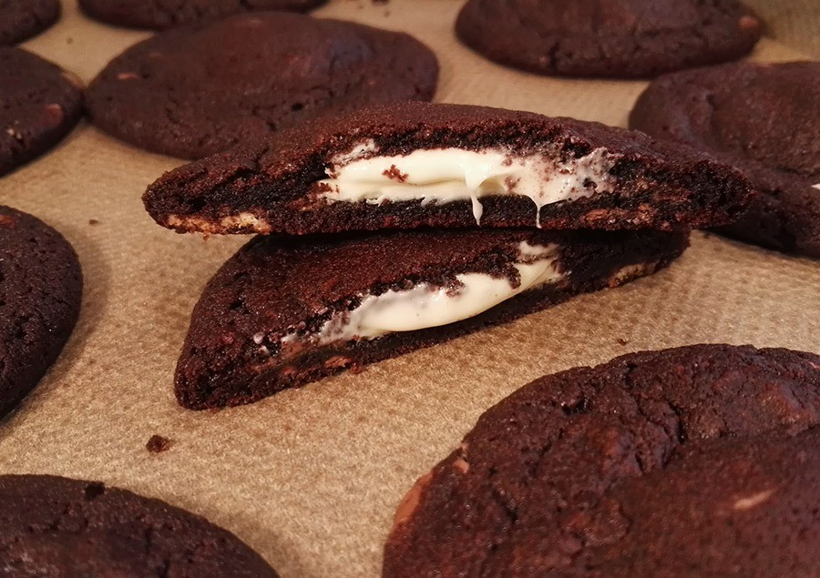

עוגיית אמסטרדם
אם עוד לא יצא לכם לטעום את העוגייה המפורסמת של אמסטרדם - הגיע הזמן! Van Stapele היא קונדיטוריה קטנה בלב אמסטרדם שמוכרת רק סוג אחד של עוגיה - עוגיית שוקולד ממולאת פרלין שוקולד לבן. זהירות, זה ממכר!

אמסטרדם היא אחת מהערים המתויירות והכייפיות ביותר בעולם, אז למה שלא תבחרו בה ליעד הטיסה הבא שלכם?
אצלנו תוכלו למצוא כמה המלצות שיעשו לכם את הטיול מהנה וחוויתי ביותר!
אם עוד לא יצא לכם לטעום את העוגייה המפורסמת של אמסטרדם - הגיע הזמן! Van Stapele היא קונדיטוריה קטנה בלב אמסטרדם שמוכרת רק סוג אחד של עוגיה - עוגיית שוקולד ממולאת פרלין שוקולד לבן. זהירות, זה ממכר!
מיני גולף זוהר בחושך הוא חוויה קסומה בה תתחרו מול חברים או משפחה ותחשפו לשלל צבעים זוהרים ומרגשים שיהפכו את החוויה לבלתי נשכחת. המיני גולף ממוקם במרתף של בר שכונתי בו תוכלו להנות מבירה או יין להנהתכם.

במרחק של כ-40 דקות נסיעה באמסטרדם, שוכנים גני קוקנהוף (Keukenhof), גינת הפרחים הגדולה ביותר בעולם. תוכלו למצוא שם תצוגת פרחים מכל הסוגים, שבילים מקסימים להליכה, אגם ברבורים, מתקנים שונים ועוד.